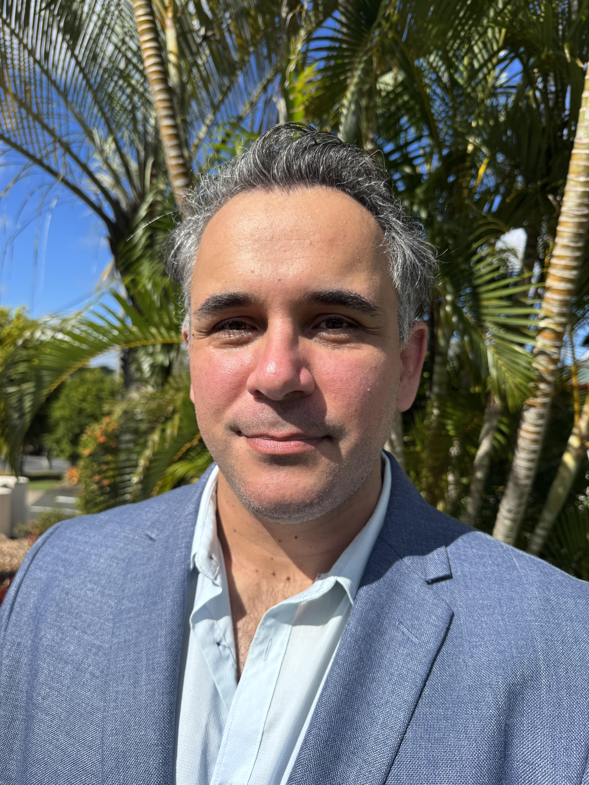

Academic Background
Professional Profile
I'm a data analyst with 4 years of experience specializing in environmental science applications. My expertise spans Excel (Power Query, Macro), R, SQL (BigQuery), Python, Power BI, and Tableau. I excel at analyzing complex datasets to extract actionable insights that drive sustainable decision-making across various sectors. My unique combination of technical data skills and environmental science knowledge allows me to bridge the gap between raw data and practical environmental solutions.
Education
Bachelor of Environmental Science
Griffith University | 2011-2017Specialized in water quality research, investigating cyanobacterial growth under varying nitrogen conditions. My research focused on understanding eutrophication processes and their impacts on both ecosystem and human health.
Master of Environmental Science
Griffith University | 2017-2019Conducted comprehensive analysis of 5 river systems across 6 pollutant metrics. My thesis involved critical comparison of the SEQ water quality guidelines (State) with the Australian Drinking water quality guidelines (Federal), identifying key discrepancies and exceedances.
Technical Skills
Data Analysis Projects
Below you'll find examples of my data analysis projects demonstrating my technical skills and analytical approach. Each project showcases different aspects of my capabilities from data cleaning to advanced visualization.
Environmental Data Analysis Portfolio
Restaurant Sales Analysis: Power BI Dashboard
Comprehensive Analysis of 19,560 Takeaway Orders
This Power BI project analyzes sales data from two Indian restaurants, providing actionable business insights through interactive visualizations.
Key Features:
- Time Series Analysis: Identified sales patterns and seasonal trends across days, weeks, and months
- Menu Optimization: Determined most popular and profitable items to guide menu decisions
- Customer Insights: Analyzed ordering patterns, average spend, and peak times
- Comparative Metrics: Benchmarked performance between locations
- Interactive Reporting: Created dynamic filters for granular analysis
Technical Implementation:
- Data cleaning and transformation using Power Query
- Advanced DAX measures for custom metrics
- Interactive drill-through capabilities
- Performance optimization for large datasets
- Custom tooltips and bookmarks for enhanced UX
The complete dataset is available on Kaggle.
Get In Touch
I'm always interested in discussing new projects, research opportunities, or data analysis challenges. Feel free to reach out for collaborations or consulting work.